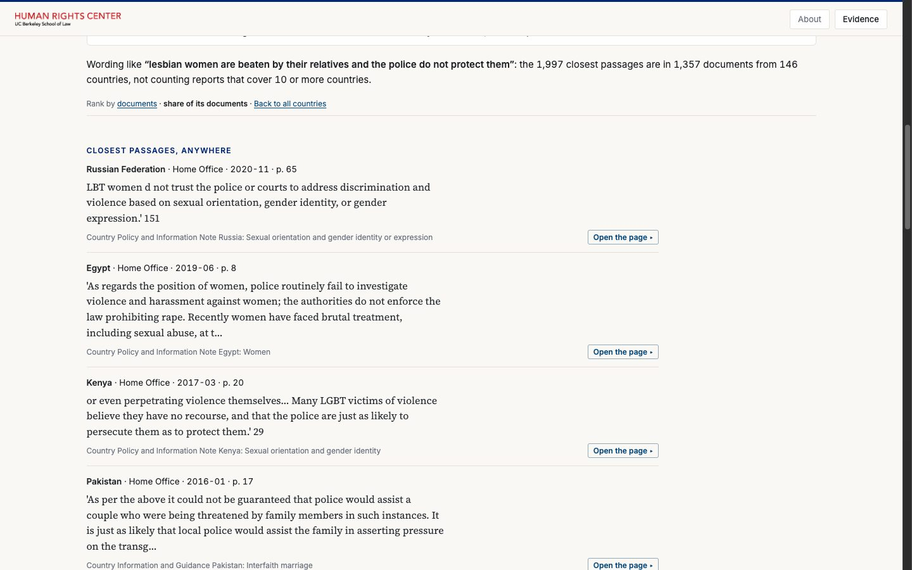
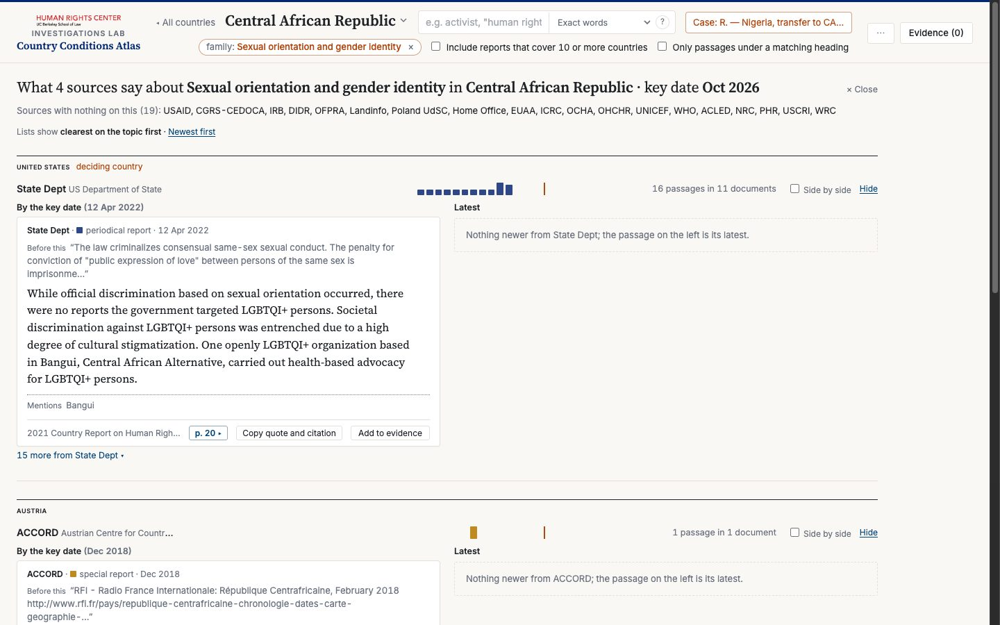
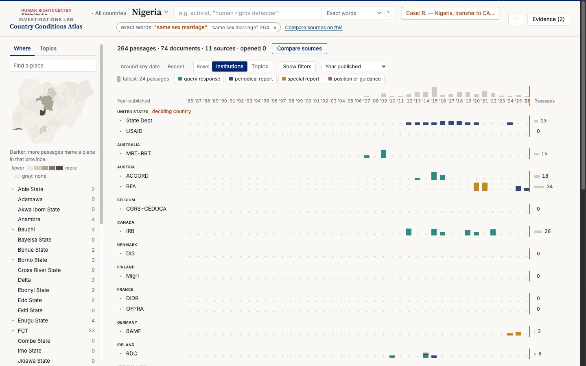
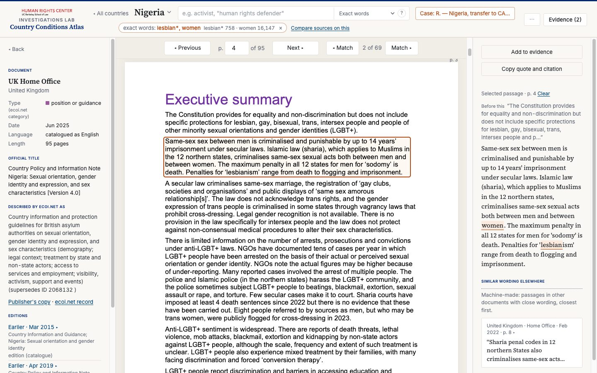
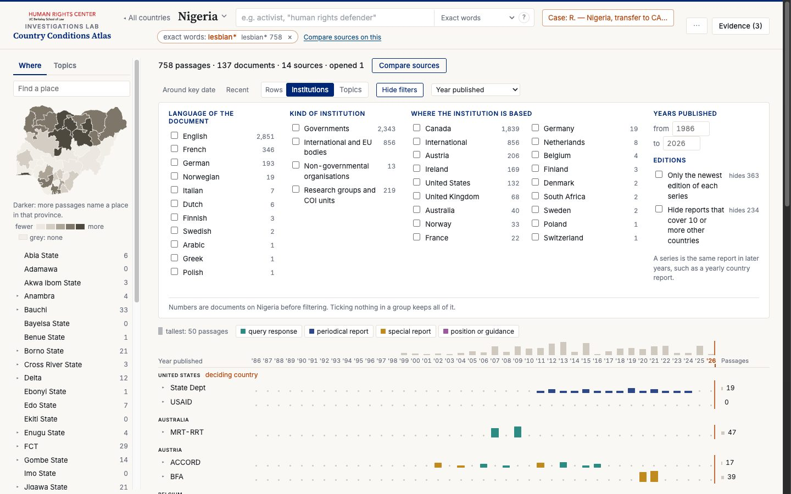

Investigations Lab · Country Conditions Atlas
Building R.'s Country File
A walkthrough of the atlas, following one case from the first search to a Word file of evidence. Every screen below is the real atlas, and every finding quoted is a real passage in its collection.
The caseA transfer to a third country, and what may come after
- Client
- R., a Nigerian woman in a relationship with another woman
- Transferred to
- Central African Republic, under a third-country arrangement
- Planned date
- October 2026
- Risk after that
- Onward removal from the Central African Republic to Nigeria
- Decided in
- United States, immigration court
I am R.'s lawyer. To argue that sending her to the Central African Republic would expose her to violations of her human rights, I need what institutions have written, and when, about three things:
- How the law and society in the Central African Republic treat women in same-sex relationships, over the years and now.
- What else a woman alone would face there: armed conflict, sexual violence, and whether anyone protects her.
- What would happen to her if the Central African Republic sent her on to Nigeria.
The atlas helps me find and quote. It does not judge: it will not say whether a country is safe or which report is right. Where sources disagree, it shows both, and the weighing is mine.
Part IStart wide: where is this written about?
Before opening any one country, I look across all of them. This tells me how much material exists, where it is concentrated, and whether my client's situation is documented elsewhere in similar words.
1The first page
The first page is a search box over the whole collection: about 83,000 reports on 198 countries, from 1986 to 2026. Below it is the map. I can type words, choose a topic, or simply pick a country.

2One word, every country
The map shades every country by how many of its documents hold the word: darker means more. The list beneath ranks them, with a strip showing the years the documents were published.


Nigeria is the country in the collection with the most documents that mention lesbian women. For a removal that could end in Nigeria, that matters: there is a deep record to draw on.
How words are counted here. A document counts when it holds the word anywhere. A phrase in quotes, such as "blood feud", counts only where the words stand next to each other. Word endings such as lesbian* are checked once you open a country.
3Counts and shares
Countries with large collections have more of everything. Ranking by share, the fraction of a country's own documents that hold the word, is often the fairer comparison. Countries with under 50 documents go last, because one document out of two is not a pattern.

4A topic, every country
A topic gathers passages filed under it by the reports' own headings, or grouped by their wording. Reference lists and tables of contents are left out.

The record on sexual orientation in the Central African Republic is thin. That is itself worth saying in a brief: the reports that exist repeatedly note that the absence of reported abuse may reflect people hiding, not safety (step 12).
5Similar wording, anywhere
Similar wording finds passages that say something close to my sentence, in other words or other languages. The first time, the browser downloads a language model, about 135 MB, once per visit. My sentence stays on my computer.

Use it to find patterns. Similar wording is machine-made. It can miss passages and include loose ones, and its country counts are among the closest 2,000 passages, not totals. It is a way in, not proof.
Part IIThe destination: Central African Republic
Now I open the country itself, record my case details, and work through what each source said, year by year, up to the most recent reports.
6The country page
The country page shows every institution that wrote about the country, by year. Each mark is a year in which that source published, coloured by the kind of document. The numbers on the right are passages. On the left, a map of provinces and the places the texts name.

7Open a case
The key date is the date that matters for the case, here the planned transfer. It is drawn as a line on every timeline, and comparisons pair each source's passage nearest that date with its latest. “Decided in” brings the deciding country's own institutions to the top of every list.

8Topics
The rows become subjects instead of institutions: security, health, women, detention, and so on. The key date appears as an orange line at the right.

9Compare sources on a topic
For each source, the atlas shows the passage nearest the key date and the latest one, with the clearest passages on the topic first. Reports that cover 10 or more countries are left out unless I tick the box. That keeps worldwide reports from drowning a small country.

10Exact words, with endings and alternatives
A star matches word endings (LGBT* finds LGBTI and LGBTQI+), quotes make a phrase, and a comma means “either”. The chip below the bar shows how many passages each part found, so I can see which words carry the result.

11Two sources side by side
The two sources line up year by year. This is how I find agreement, silence, and contradiction.

A 2018 report published on ReliefWeb (All Survivors Project, on sexual violence against men and boys) states that consensual same-sex relations are not criminalised under national law. The State Department, every year, reports a penal provision against “public expression of love” between persons of the same sex.
The 2024 State Department report reconciles them: the law criminalized same-sex conduct in public, but did not strictly criminalize private conduct. The atlas shows both; I explain the difference in my brief.
All Survivors Project via ReliefWeb, 23 Feb 2018, p. 33 · US Department of State, 2023 Country Report on Human Rights Practices: Central African Republic, 23 Apr 2024, p. 1712The page itself
The document opens at the page, as it was printed, with the passage outlined. ◂ Match · 2 of 6 · Match ▸ steps through every passage matching my words. On the left, the document's facts and its editions: the same report in earlier years, one click each. On the right, the passage's text, similar wording in other documents, and the two buttons I use most.

“…created a social environment wherein maintaining a same-sex relationship was extraordinarily dangerous.”
The same report finds no legal protection against discrimination, a constitutional ban on same-sex marriage, and no known organizations defending LGBTQI+ people. Earlier editions show two such groups disbanded in 2022.
US Department of State, 2023 Country Report on Human Rights Practices: Central African Republic, 23 Apr 2024, pp. 17–18Following the editions back, the penal provision on “public expression of love” between persons of the same sex appears in every report from 2011 onward, with prison terms of six months to two years. Since at least 2012, societal discrimination is described as “entrenched”.
US Department of State, Country Reports on Human Rights Practices: Central African Republic, 2011–2024 editions13Other languages, and what a card shows
Many reports are not in English. The atlas translated them by machine and searches both texts. A card for a long passage shows the part that matches, between ellipses; “Show all” gives the whole passage. Translations are always labelled, and the original is one click away.

14Similar wording inside a country
My client would arrive as a woman alone, in a country at war. Similar wording finds passages about this risk however each report phrased it. For each source, the comparison pairs the passage nearest the key date with the latest.

15The newest reports
The collection runs to the autumn of 2026. The newest reports on the Central African Republic are often in French, from UN agencies and European asylum offices. Opening one shows the French page with the passage outlined, and the machine translation underneath in the side panel.

Citing UN figures, the report states that two people are victims of gender-based violence every hour, and that nearly 16,200 cases were recorded between January and September 2024, 34% of them rapes, mostly of girls and women.
CGRS-CEDOCA, République centrafricaine (RCA): Situation sécuritaire à Bangui, 21 Jan 2026, p. 26 (machine translation from French; check the original)Part IIIIf she is sent on: Nigeria
A third-country transfer is not the end of the risk. If the Central African Republic sends R. on to Nigeria, the conditions there matter too.
16Switch country, keep the search
Switching country keeps the case, the key date and the deciding country. The search carries over too.

17The latest guidance

Secular law in Nigeria targets sex between men. Sharia, which applies to Muslims in the 12 northern states, also criminalises same-sex acts between women.
“Penalties for ‘lesbianism’ range from death to flogging and imprisonment.”UK Home Office, Country Policy and Information Note Nigeria: Sexual orientation, gender identity and expression, and sex characteristics, version 4.0, June 2025, p. 4
18Filters
Filters narrow the documents by language, kind of institution, where the institution is based, and years. “Only the newest edition of each series” and “Hide reports that cover 10 or more other countries” are here too. Every filter shows how many documents it covers before I tick it.

Part IVTake it out
Everything I added along the way is in the Evidence drawer, under the points I wrote.
19The evidence file
Each passage is kept verbatim, with a citation written for the venue I chose (here, US immigration court and BIA). I can write a note under each passage, move passages between my points, or open the page again. Nothing leaves this browser.

20Word, and the rest
At the bottom of the drawer: a Word document to write the submission from, a source list to paste into a document I already have, a backup to move the case to another computer or a colleague, and Print.

SummaryWhat we found
| Question | What the record says | Source and date |
|---|---|---|
| Is same-sex intimacy criminal in the Central African Republic? | The law punishes it in public, with six months to two years in prison; private conduct is not strictly criminalized. One 2018 report says it is not criminalised at all. | US State Dept, 2011–2024 editions; All Survivors Project via ReliefWeb, 2018 |
| How does society treat lesbian women there? | Discrimination “entrenched” since at least 2012. In the latest report, a same-sex relationship is “extraordinarily dangerous”, with no protective law and no known support organizations. | US State Dept, Apr 2024 and earlier |
| Why so few reports of abuse? | The reports themselves say the absence of reports may reflect people hiding their identity, or the difficulty of tracing violence in a war. | US State Dept, 2023 and 2024; ACCORD, Dec 2018 |
| What would a woman alone face? | Sexual violence by armed groups “with impunity”; about 16,200 gender-based violence cases recorded in January–September 2024, a third of them rapes. | US State Dept, 2018; CGRS-CEDOCA, Jan 2026 |
| If she is sent on to Nigeria? | Sharia in 12 northern states criminalises sex between women; penalties range from death to flogging and imprisonment. Federal law bans same-sex marriage and LGBT+ groups. | UK Home Office, June 2025 |
CareBefore you rely on it
- Open the page. Quote from the document as printed, not only from a card.
- Translations are machine-made. They can be wrong; the original is one click away.
- Topics and similar wording are made by models. They are a way in, not a complete list. Exact words are exact.
- Silence is not safety. A source with nothing on a subject may not have looked.
- Regional and worldwide reports are filed under every country they name. Check that a passage is about your country.
- This is a selection from ecoi.net, not all of it.
ReferenceEvery feature, by step
- Search all countries, exact words: 2
- Rank by documents or share: 3
- A topic across countries, map readout: 4
- Similar wording across countries, closest passages anywhere: 5
- The country page, institutions by year, places map: 6
- Evidence: start a case, add a point: 7, 19
- Case panel: key date, deciding country: 7
- Topics view: 8
- Compare sources, clearest first, hide worldwide reports: 9
- Word endings (*), phrases (" "), either (,), per-word counts: 10
- Side by side: 11
- Document viewer, match stepping, editions, add to evidence, copy quote: 12
- Machine translation, match excerpts on cards: 13, 15
- Similar wording inside a country: 14
- Switch country and keep the case: 16
- Filters: language, institution, place, editions, worldwide reports: 18
- Exports: Word, source list, backup, print: 20
- “◂ All countries” takes your words back to the search across countries: 6